영상 AI의 다음 병목은
‘화질’보다 ‘제어’다
논문 하나로 설명 릴스를 만드는 일은 원클릭에 가까워짐. 하지만 같은 얼굴, 같은 제품, 원하는 카메라 동작을 끝까지 유지하는 일은 여전히 어려움. Seedance·Wan·MiniMax 탐색에서 드러난 자동화의 경계와 시각적 레퍼런스의 역할.
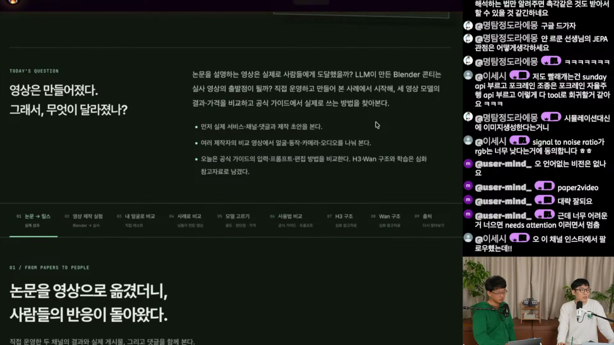
이번 사례의 핵심은 두 종류의 자동화가 서로 다른 성숙도에 도달했다는 점. 논문 자료를 조사하고 내레이션·모션 그래픽으로 엮는 설명형 영상은 높은 자동화 수준을 보여줌. 반면 LLM이 Blender로 만든 장면을 실사 영상으로 바꾸는 과정에서는 인물·제품 일관성과 지시 준수가 주요 병목으로 남음.
진행자가 제시한 방향은 말로 모든 것을 설명하기보다, Blender 클레이와 레퍼런스 영상으로 구도·동작을 먼저 고정하는 방식. 영상 모델을 선택할 때도 단일 출력의 인상보다 입력 제어 방식, 재생성 횟수, 검수 비용을 함께 봐야 한다는 시사점.
근거: 제공된 노트에 기록된 자동 자막·메타데이터·25개 추출 프레임. 본 문서에서 원영상이나 모델 공식 자료를 새로 대조하지 않음. 가격·구조·성능 관련 진술의 근거 범위는 출처와 검증 범위에 명시.
먼저 읽는 세 가지 발견
자동화의 성패는 작업마다 다름
논문 설명 릴스는 생성부터 배포까지 자동화 사례가 등장. 실사 제작은 컷마다 얼굴·손·제품을 검수하고 다시 생성하는 과정이 필요.
시각적 입력이 제어의 핵심
텍스트 중심 실험에서는 결과가 흔들림. 동작 영상과 얼굴 사진을 함께 준 실험은 레퍼런스를 따르는 능력을 보여줌.
단가보다 채택 비용을 볼 것
영상 속 5초 생성 단가는 $0.30~약 $1.16. 원하는 샷을 얻기 위한 반복 생성과 연속성 검수가 실제 제작비를 좌우.
논문을 설명하는 영상은
이미 배포까지 이어지고 있음
첫 사례는 실사 생성이 아니라 연구 내용을 짧은 영상으로 번역하는 작업. 자료 수집·설명 구성·화면 연출이 하나의 흐름으로 연결됨.
공동창업자가 만든 Paper2Video는 논문·프로젝트 URL 또는 PDF를 받아 난이도별 설명 영상을 생성하는 도구. 화면에는 Easy·Intermediate·Advanced 세 칸과 “1 of 3 videos ready”가 표시됨. 이 장면에서 확인되는 완료 결과는 Intermediate 영상 하나.
RLDX-1 설명 영상은 코드 에디터를 닮은 화면에 problem.md, prior_work.md, method.py, results.log, limits.md를 배치. 로봇 영상을 삽입하고 액션 청크를 설명한 뒤, 사진 한 장으로는 속도를 알기 어렵다는 문제로 이어짐.
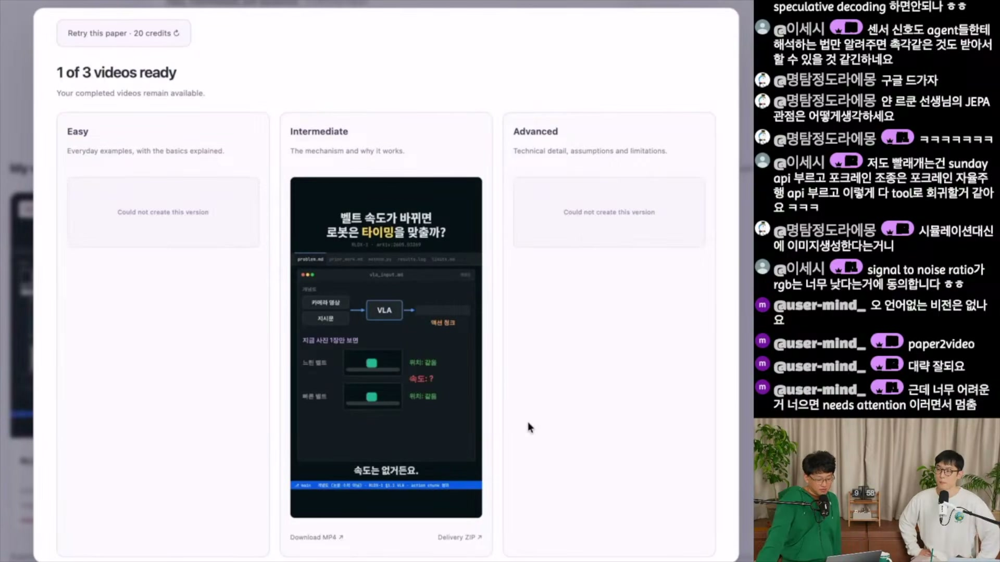
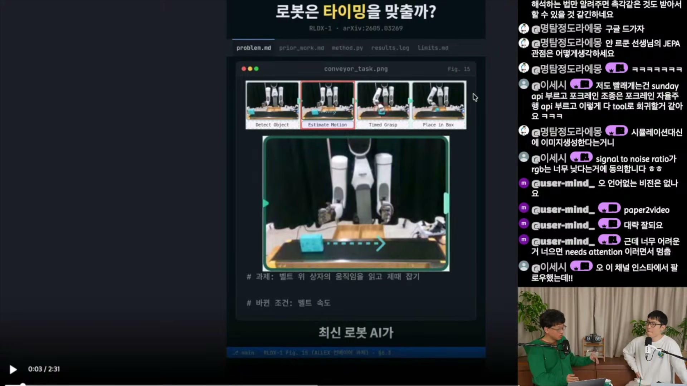
요약을 넘어 실험의 구분까지 전달
영상은 벨트 속도 S1~S4 중 S1·S4를 데모 속도, S2·S3을 처음 보는 속도로 구분. 진행자는 S2·S3이 S1·S4 사이의 보간 조건이라는 점을 짚어 준 구성을 높게 평가함. 약 2분 30초 영상으로 논문을 파악할 수 있다는 평가는 진행자의 감상이며, 설명 정확도를 별도로 검증한 결과는 아님.
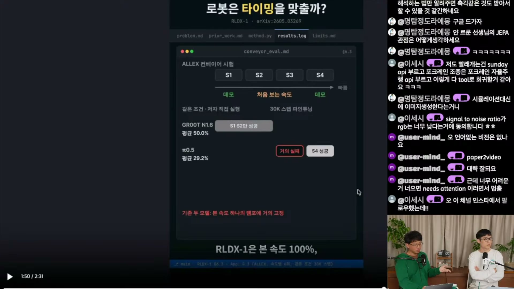
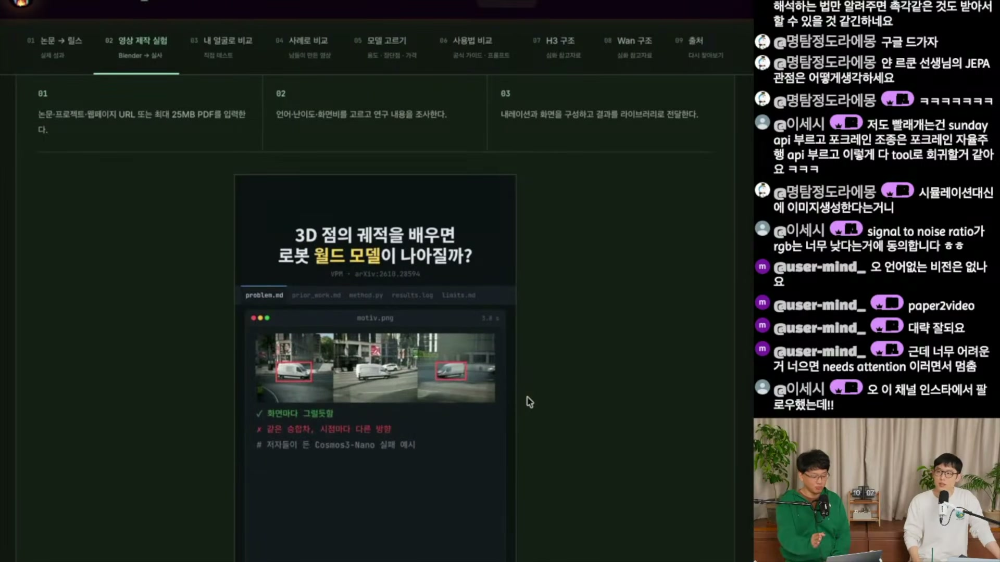
생성 다음의 과제는 큐레이션과 피드백
진행자는 프로젝트 페이지의 이미지·피규어·영상도 에이전트가 수집해 활용한다고 설명. 인스타그램 @frontier.robotics에서는 큐레이션부터 생성·업로드까지 AI가 수행하며, 매일 arXiv 후보를 고르고 반응을 바탕으로 선정 기준을 개선할 계획이라고 밝힘.
영상 속 정리 페이지의 당시 집계값. 자막상 채널 개설 약 10일 후의 수치이며, 현재 수치나 고유 시청자 수를 뜻하지 않음.
Blender는 콘티를 만들었지만,
실사화에서 정체성이 흔들림
장면을 설계하는 능력과 같은 인물·제품을 유지하며 픽셀을 생성하는 능력 사이에 간극이 드러난 실험.
진행자는 말로 설명한 콘티를 LLM에 전달하고, Blender로 약 30컷의 폴더블 폰 광고를 제작. 아이폰 대 갤럭시 구도에 서부극·스타워즈·해리포터 패러디를 섞도록 지시했으며, 대사는 AI 생성분과 직접 수정한 부분을 함께 사용.
이 단계에서 Blender의 역할은 카메라·위치·동작·컷 타이밍을 눈에 보이는 형태로 고정하는 것. 다음 단계는 그 장면을 영상 생성 모델로 실사화하는 작업.
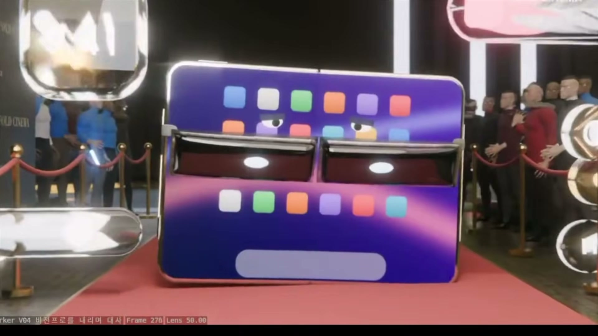
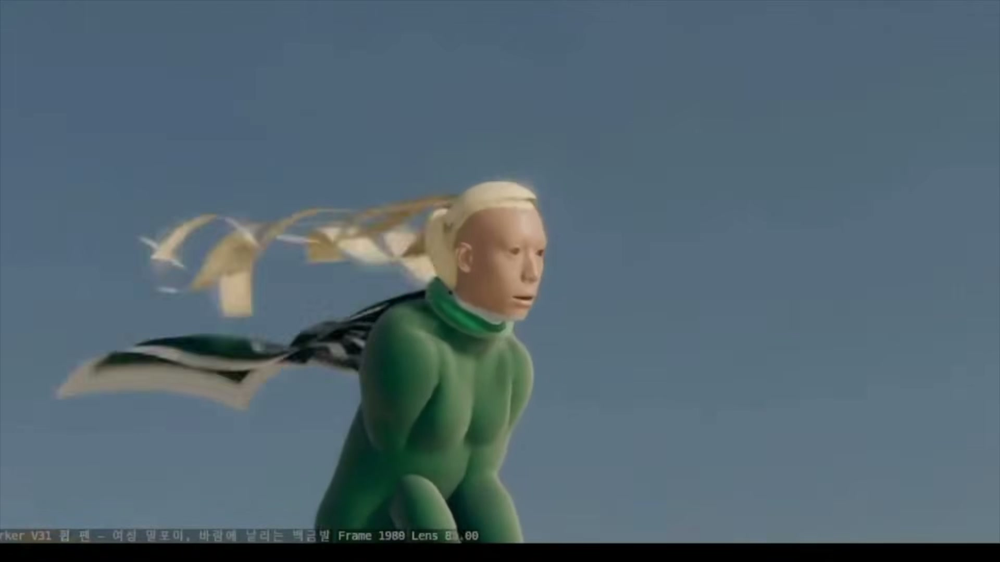
기획부터 사운드까지, 제작의 여섯 단계
- 기획을 구조화
storyboard.json에 장면·샷·컷 길이·히트 포인트·대사 타이밍 기록. - Blender 프리비즈LLM이 Python 스크립트로 도시·휴대폰·카메라·인물 동작을 구성.
- 실사 참조 준비인물 사진과 실제 제품 자료로 외형의 기준을 마련.
- 장면 생성실사 시작 프레임을 쓰는 i2v 또는 회색 가이드 영상과 사진을 쓰는 r2v 적용.
- 검토·선택·편집얼굴·옷·기기의 연속성을 확인하고 채택할 샷을 선택.
- 사운드와 기록ElevenLabs 음성·음악·효과음을 더하고 제작 과정을 기록.
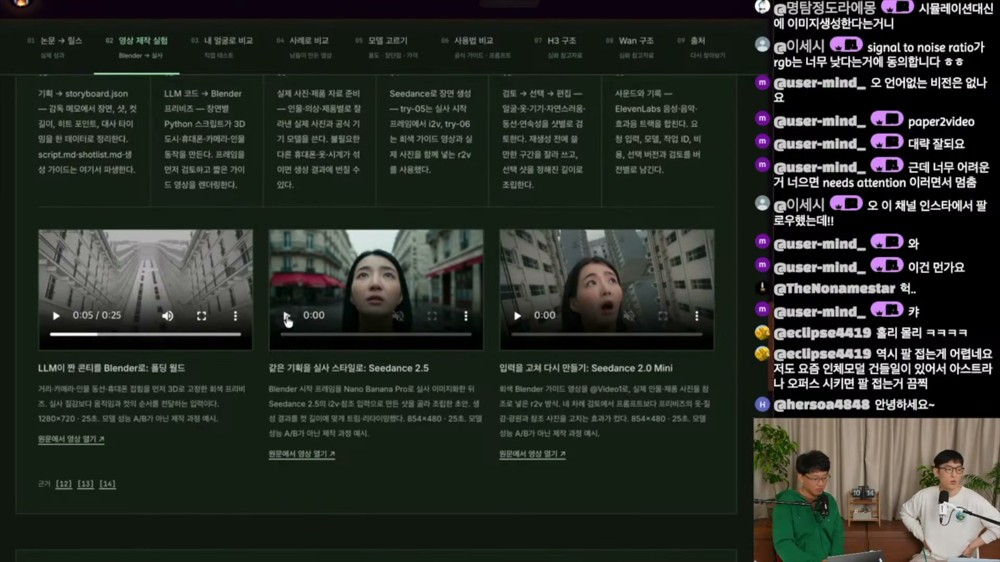
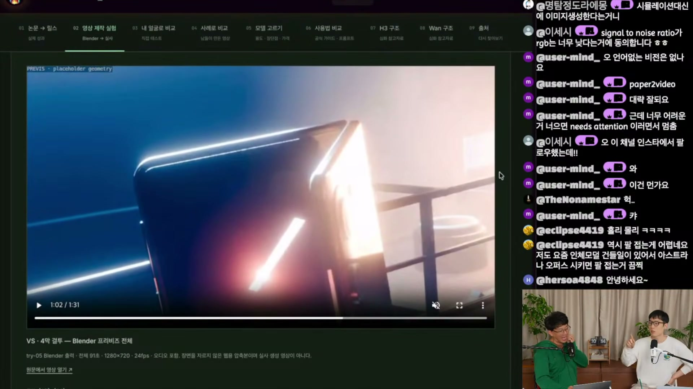
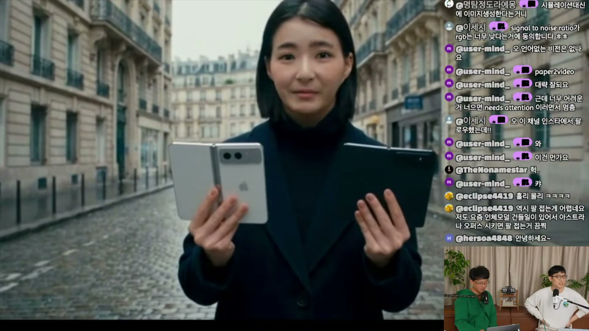
진행자는 전체 과정을 에이전트에 맡긴 결과이며, 개별 프롬프트와 추론 과정을 살피면 개선 여지가 있다고 봄. 하네스와 세부 제어를 정교하게 만들면 해결할 수 있다는 주장은 진행자의 전망으로, 이번 실험에서 완성된 해법이 검증된 것은 아님.
“구도까지만 잡고 영상 생성 모델로 덮어씌우면”
더 영화 같은 결과를 기대할 수 있음.
좋은 레퍼런스는
긴 설명보다 구체적인 입력
동작과 인물의 기준을 이미지·영상으로 제공하면 무엇이 달라지는가.
다음 실험은 유행하는 춤 영상과 진행자 본인의 얼굴 사진을 함께 입력하는 방식. Seedance·Wan·MiniMax와 Sume Remix를 사용해 레퍼런스 동작을 얼마나 잘 따르는지 살펴봄.
진행자의 의도는 완성도 높은 동작 레퍼런스가 있을 때 따라 만드는 능력을 보여주는 것. 앞선 텍스트 중심 실험과는 입력 조건과 과제가 달라, 레퍼런스 하나의 효과만 분리한 통제 실험은 아님.
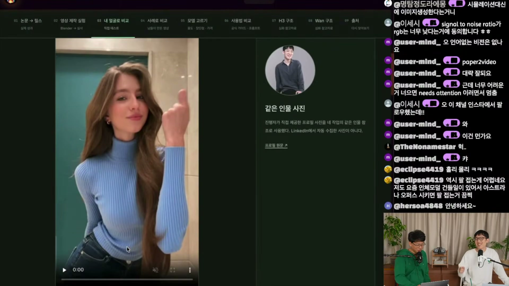
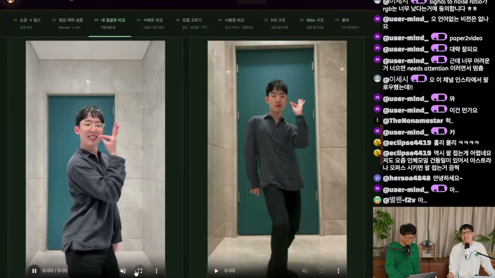
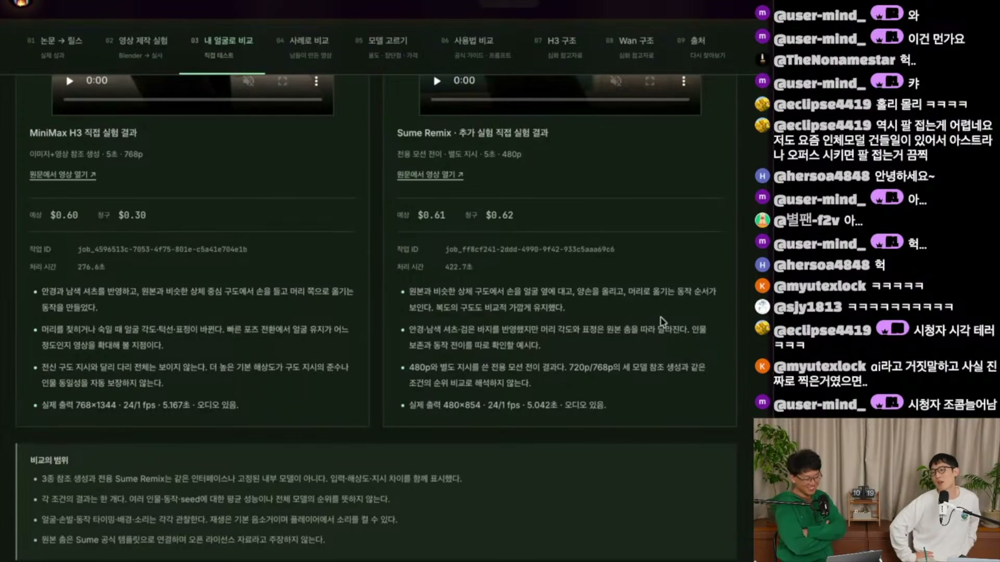
| 항목 | MiniMax H3 | Sume Remix |
|---|---|---|
| 작업 조건 | 이미지 + 영상 참조 5초·768p 요청 | 전용 모션 전이·별도 지시 5초·480p 요청 |
| 예상 → 청구 | $0.60 → $0.30 | $0.61 → $0.62 |
| 처리 시간 | 276.6초 | 422.7초 |
| 실제 출력 | 768×1344 · 24fps 5.167초 · 오디오 있음 | 480×854 5.042초 |
| 비교 제한 | 모델별 조건이 다르고 각 조건의 출력은 1개. 재현성·성공률·평균 비용을 추정하기에는 부족. | |
자막에서는 Seedance 2.5와 Wan 비용을 각각 약 1,500원 수준으로 언급하고 Seedance가 가장 비쌌다고 설명. 위 카드의 달러 청구값과는 구분해 기록.
화면이 자연스러워져도
소리와 연속성은 따로 봐야 함
다음 네 장면은 영상 속 “사례로 비교” 구간. 앞선 직접 실험과 달리 다른 사람들이 만든 사례를 소개하는 맥락.
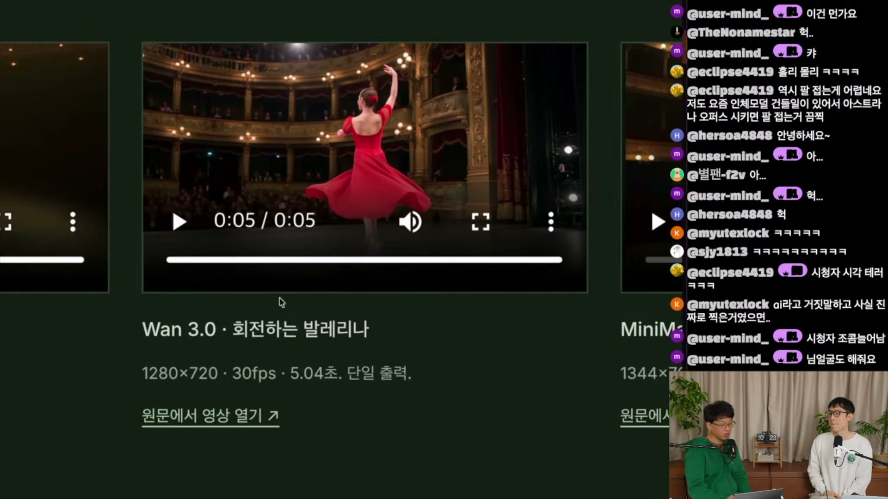
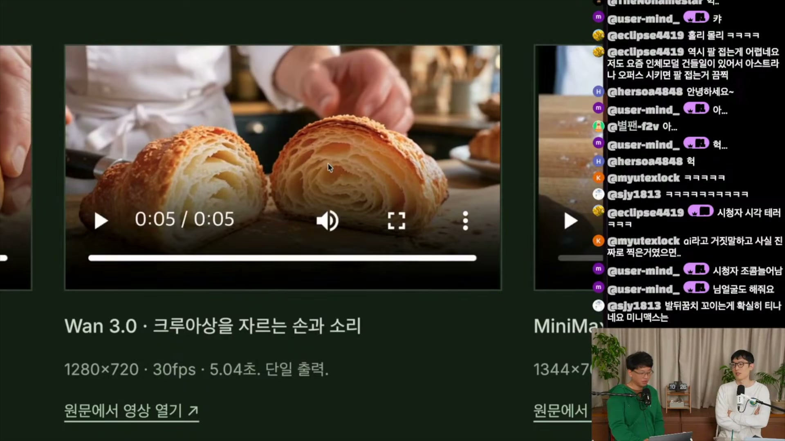
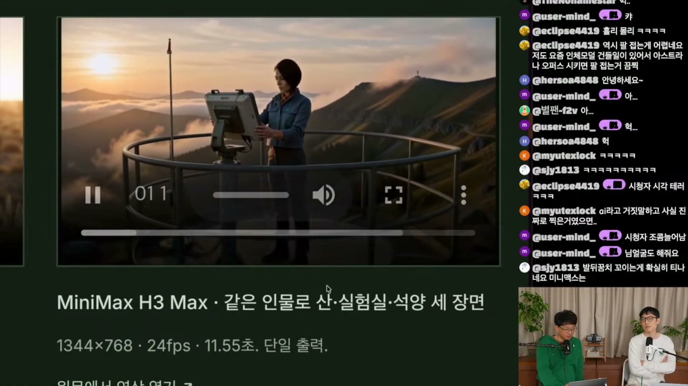
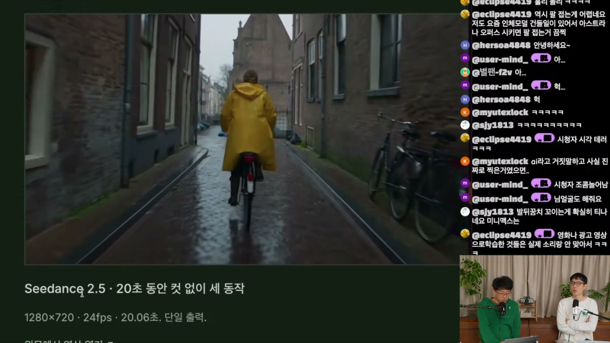
오디오는 장점과 약점이 동시에 드러나는 영역. 발소리처럼 움직임과 소리의 타이밍이 맞는가와 빵 자르는 소리처럼 소재의 질감이 그럴듯한가는 서로 다른 검수 항목. 영상과 오디오를 함께 출력하더라도 두 조건이 모두 충족되는 것은 아님.
오디오 품질과 움직임의 연속성에 관한 설명은 진행자의 발언과 원노트 기록에 근거. 이 문서에 삽입된 정지 프레임만으로는 확인 불가.
5초의 가격보다 중요한 것:
몇 번 만에 쓸 만한 샷을 얻는가
모델별 단가 차이와 함께, 입력 기능·재생성 횟수·편집 시간을 고려해야 하는 이유.
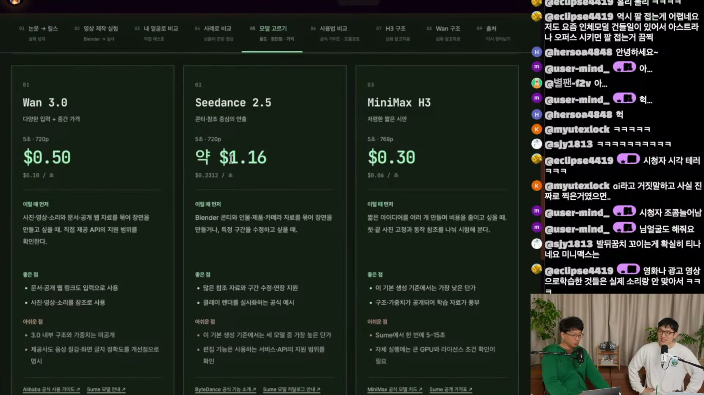
| 모델 | 표시 단가 | 진행자가 제시한 용도·장점 | 주의점·제한 |
|---|---|---|---|
| Wan 3.0 | $0.50720p · $0.10/초 | 사진·영상·소리와 문서·공개 웹 자료를 묶어 장면 생성. 다양한 입력 지원으로 소개. | 3.0 내부 구조·가중치 미공개로 설명. 음성 질감과 화면 글자 정확도는 개선 과제. |
| Seedance 2.5 | 약 $1.16720p · $0.2312/초 | 콘티·인물·제품·카메라 참조를 결합한 연출. 구간 수정·연장 및 클레이 실사화 예시를 소개. | 표에 제시된 세 모델 중 높은 단가. 480p 드래프트 모드 활용 전략을 제안. |
| MiniMax H3 | $0.30768p · $0.06/초 | 짧은 시안을 여러 개 만드는 용도. 낮은 단가와 공개 Base 구조·가중치를 장점으로 소개. | Sume에서 1회 5~15초로 설명. 자체 실행은 GPU 요구량·라이선스 확인 필요. 호스팅 Lite/Max와 공개 Base는 구분. |
반복 생성이 비용에 미치는 영향
아래는 성능 비교가 아닌 표시 단가에 생성 횟수를 곱한 단순 계산. 동일한 5초 조건을 유지하고 모든 시도가 같은 금액으로 청구된다고 가정. 긴 영상, 업스케일, 음성, 편집, 검수 비용은 제외.
| 5초 생성 단가 | 1회 | 5회 | 10회 |
|---|---|---|---|
| MiniMax H3 | $0.30 | $1.50 | $3.00 |
| Wan 3.0 | $0.50 | $2.50 | $5.00 |
| Seedance 2.5 | 약 $1.16 | 약 $5.80 | 약 $11.60 |
Seedance 계산에는 반올림한 5초 단가 $1.16 사용. 영상은 긴 생성물의 비용을 약 $2~3 수준으로도 언급하지만, 위 표는 5초 조건만 다룸.
진행자가 제안한 비용 관리 방법은 480p 드래프트로 여러 시안을 만든 뒤 유망한 결과를 업스케일하는 방식과, 마크업이 낮은 라우터를 선택하는 방식. 사용 서비스로 Sume를 언급함. 이는 영상의 실무 팁이며 현재 가격이나 서비스 우열을 검증한 추천은 아님.
구조를 읽을 때는
공개 모델과 서비스를 분리할 것
영상 후반의 기술 해설은 MiniMax H3-Base와 Wan 2.2 A14B를 중심으로 진행. 최신 서비스 전체의 내부 구조를 확인한 내용은 아님.
MiniMax H3: 영상과 오디오를 함께 생성
화면의 H3-Base 도식은 텍스트·시각·오디오 조건을 인코딩하고 하나의 시퀀스로 묶은 뒤, 공유 Transformer에서 영상과 오디오를 함께 디노이징하는 흐름. 마지막에는 영상·오디오 VAE 디코더로 분기해 동기화된 영상과 스테레오 오디오를 출력하는 구조로 소개됨.
영상·오디오 VAE 인코더
토큰과 참조 latent 결합
공유 DiT backbone × 50
영상·오디오 공동 디노이징
Audio VAE Decoder
동기화 영상 + 스테레오
영상 속 도식을 단순화한 설명. 원 모델 카드나 코드로 재검증한 구조도가 아님.
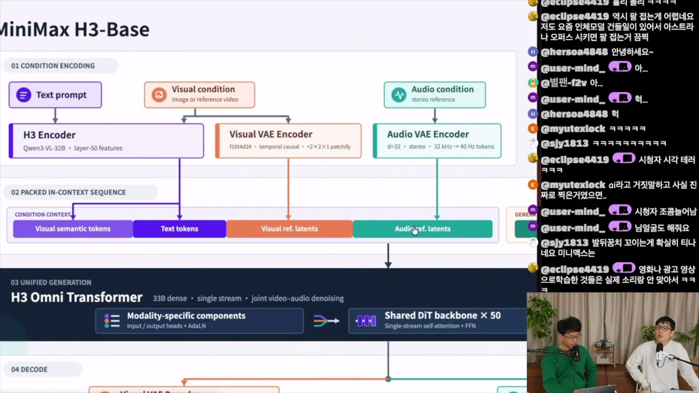
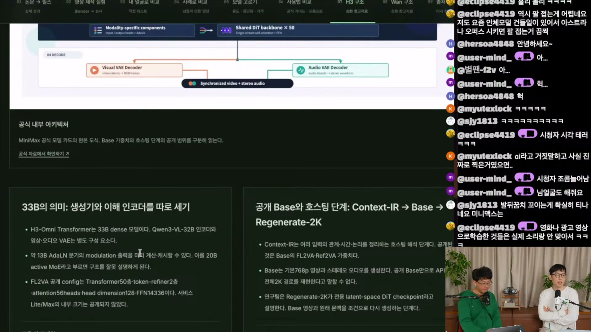
기술 상세 · 숫자와 공개 범위
- 33B dense: H3 Omni Transformer의 크기를 가리키며, Qwen3-VL-32B 인코더와 영상·오디오 VAE는 별도라는 설명.
- AdaLN 캐시: 약 13B AdaLN 분기의 modulation 출력을 미리 계산·캐시할 수 있으나, 이를 “20B active MoE”라고 부르면 구조를 오해할 수 있다는 주의.
- FL2VA 공개 config: Transformer 50층, token-refiner 2층, attention 56 heads, head dimension 128, FFN 14336으로 화면에 정리됨.
- 서비스와 공개 Base: 호스팅 흐름은 Context-IR → Base → Regenerate-2K. Base는 기본 768p 영상과 스테레오 오디오 생성. 공개 Base만으로 전체 2K 경로를 재현할 수 있다고 볼 수 없음.
- Lite/Max: 서비스 모델 내부 크기는 비공개로 설명. 공개 Base의 파라미터 수를 서비스 전반에 그대로 적용할 수 없음.
진행자는 규모를 늘리면 GPU를 직접 빌리는 편이 더 저렴할 수 있다고 추정. 다만 이번 자료에는 GPU 종류·가동률·배치 크기·추론 속도·운영 인건비를 포함한 비용 비교가 없어, 자체 호스팅의 경제성이 입증된 것은 아님.
Wan: 확산 단계별로 역할을 나누는 두 전문가
Wan 3.0 구조는 공개되지 않았다는 전제에서, 영상은 공개된 Wan 2.2 A14B를 설명용 대리 사례로 사용. 노이즈가 많은 초반에는 큰 구도를 잡는 전문가를, 노이즈가 적은 후반에는 디테일을 다듬는 전문가를 사용하는 흐름으로 해설.
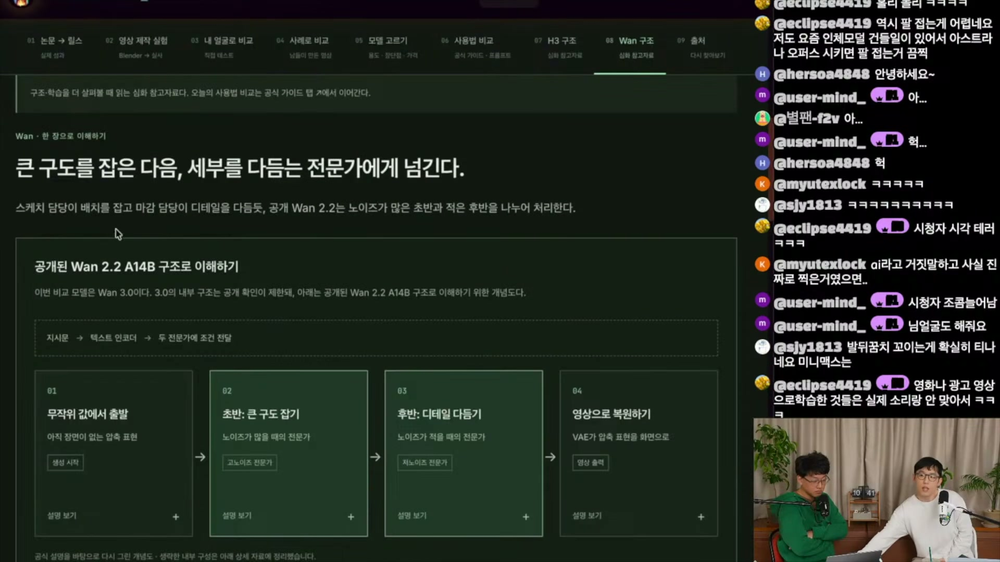
구분해야 할 두 가지
영상 설명에 따르면 Wan 2.2 A14B는 14B 전문가 두 개를 확산 과정의 앞뒤에 배치하는 방식. 텍스트 LLM에서 흔히 설명하는 토큰별 전문가 라우팅과 구분 필요.
H3의 공유 영상·오디오 백본과도 다른 구성. 진행자는 이를 두고 영상 모델 아키텍처가 하나로 통일된 상태는 아니라고 평가.
더 좋은 프롬프트보다 먼저,
제작 과정의 기준을 정할 것
이번 탐색을 실제 연구 홍보·영상 제작·시뮬레이션 작업에 적용할 때의 판단 기준.
생성 이후의 검증과 큐레이션
논문·과제 성과를 난이도별 짧은 영상으로 전달하는 경로가 유망. 논문 해석 검수, 후보 선정, 시청자 반응 수집을 함께 설계할 필요.
구도와 외형을 나눠 지정
구조화된 콘티와 Blender 클레이로 동작·카메라를 고정. 인물·제품 참조를 반복 제공하고 컷 사이의 연속성을 별도로 검사할 필요.
사실감과 데이터 유효성 구분
시뮬레이터 렌더의 실사화는 탐색 가치가 있음. 다만 생성 단가와 일관성 문제에 더해, 학습에 필요한 기하·동작 정보 보존 여부를 검증할 필요.
다음 제작에서 사용할 검수 항목
아래는 영상의 관찰을 바탕으로 정리한 실무용 체크리스트. 이번 실험에서 통과가 입증된 항목을 뜻하지 않음.
- 콘티: 장면·샷 길이·카메라·핵심 동작·대사 타이밍이 명시되어 있는가.
- 참조: 동일 인물·제품에 대해 컷마다 같은 기준 이미지를 제공했는가.
- 연속성: 시작·중간·끝과 컷 경계에서 얼굴·의상·제품 형태가 유지되는가.
- 동작과 소리: 손·발·접촉 동작이 자연스러운가. 효과음의 시점과 소재 질감이 맞는가.
- 비용: 생성 횟수·청구액·채택 여부·재작업 이유를 함께 기록했는가.
- 자동 검수: LLM의 평가만으로 통과시키지 않고, 사람이 볼 표본과 실패 기준을 마련했는가.
후반 대화: 설명형 채널과 미래 제작 방식
진행자는 얼굴형 AI 유튜버가 대세가 될 것이라는 과거 예측과 달리, 모션 그래픽 기반 설명형 채널이 늘어나는 방향으로 변화가 나타났다고 진단. Opus 5.5 이후 급증했다는 시점 해석과, 생성 비용 때문에 장시간 팟캐스트형보다 임팩트 있는 쇼츠·릴스에 적합하다는 평가는 대화 속 견해.
학습 측면에서는 대량의 영화·스트리밍 영상만으로 텍스트 지시와의 정렬이 해결되지는 않으며, 효과음·음악 분리와 음악 박자·컷 전환의 정합도 과제라고 언급. 월드 모델을 통한 점진적 조작, 긴 컨텍스트를 다루는 자기회귀 구조 등은 미래 가능성으로 논의됨.
로봇 분야에서는 MuJoCo 등의 Real2Sim 시뮬레이터 출력에 생성 모델을 적용하는 아이디어를 제시. sudoremove 자체 편집에서는 모션 그래픽만으로 설명이 부족한 부분을 사실적 이미지·영상으로 보완하는 데 관심이 있으며, 결과는 추후 공개 예정이라고 설명.
원하는 장면을 먼저 정의하고,
그 장면을 지키는 비용을 측정할 때
이번 사례에서 설명형 영상은 정보 구성과 배포의 자동화 가능성을 보여줌. 실사 영상은 더 구체적인 시각적 제약과 반복 검수가 필요한 단계. 두 작업을 같은 의미의 “원클릭 영상 생성”으로 묶으면 실제 제작 부담을 놓치기 쉬움.
다음 실험은 짧은 한 장면에서 시작할 수 있음. 구도·동작·인물·제품의 기준을 정하고, 레퍼런스를 고정한 뒤, 여러 출력의 실패 이유와 채택 비용을 기록하는 것. 모델 이름보다 자신의 제작 과정에 필요한 제어 수준을 알아가는 데 의미가 있음.
출처와 검증 범위
본 문서는 제공된 Obsidian 노트를 편집·재구성한 2차 해설. 아래의 수집·검사 절차는 원노트에 기록된 방법이며, 이 HTML 작성 과정에서 새로 수행한 검증을 뜻하지 않음.
- 1차 자료. 「영상 생성 입문 | Seedance, Wan도 해봄」, sudoremove. 제공 메타데이터 기준 게시일 2026년 11월 6일, 길이 39분 53초(2,393초), 챕터 18개. 각 이미지의 타임코드는 원영상 해당 위치로 연결.
- 텍스트 근거. 한국어 자동 자막, YouTube 메타데이터·설명란·챕터. 수동 자막은 없으며 중복 제거 후 약 2.3만 자로 기록됨. 화면 오른쪽 라이브 채팅은 시청자 발언이므로 근거에서 제외.
- 이미지 근거. 원본 1080p 영상에서 추출하고 픽셀 검사·육안 확인을 거쳤다고 기록된 25개 프레임. 본문에 모두 보존. 프레임은 화면 구성과 표시값의 근거이며, 연속 동작·오디오 품질 자체의 증거를 대체하지 않음.
- 2차 정리 페이지. 주요 화면은 진행자가 LLM으로 만든 한국어 정리 페이지와 그 안의 생성 영상. 가격·해상도·모델 구조·공개 범위는 해당 페이지의 설명이며, 모델 카드·공식 가격표·코드·라이선스를 직접 대조하지 않음.
- 비교 범위. 직접 비교는 조건당 결과 1개. 입력·프롬프트·모드·해상도가 달라 모델 순위, 평균 품질, 성공률, 일반적인 처리 시간을 추정할 수 없음. 외부 사례의 선별 과정과 전체 시도 횟수도 확인되지 않음.
프레임 선정 방법 · 원노트 기록
5초 간격 479장 전수 샘플링, ffmpeg 장면 전환 검출 threshold 0.25의 443개 후보, 챕터 경계를 결합. 장면 전환 검출은 Blender 광고 구간에 집중됨. 후보 주변 ±1~3초의 4개 위치에서 0.5초 간격 프레임 차분·밝기·표준편차를 비교해 정지된 프레임을 선택했다고 기록.
육안 검토에서 의도와 다른 호스트 샷과 모션 블러 프레임(07:29·08:55·11:01)을 교체. 반복 장면(01:39와 02:31) 및 잘린 도식(28:53)은 제외. 최종 프레임의 평균 밝기 36 이상·표준편차 25 이상, 연속 선정 프레임 간 차분 11 이상이라는 검사값이 보고됨. 다만 차분값의 상세 정의·정규화 방식·실행 코드는 제공되지 않아 이 문서만으로 동일 검사를 재현하기는 어려움.
표기와 해석상의 주의
- 고유명사
- 자동 자막의 “시덴스/시젠스”, “완”, “숨” 등은 화면 표기를 우선해 Seedance·Wan·Sume로 정리. “익스필드”는 fal 계열로 추정되나 미확인. 모델 버전명 역시 제공 노트와 화면 기록을 따르며 공식 명칭을 별도 검증하지 않음.
- 가격과 성능 수치
- 가격은 영상 당시 페이지의 표시값. RLDX-1 비교 수치는 생성 릴스의 화면 내용. 현재 유효한 가격이나 논문 원문의 검증된 결과로 재인용하지 않도록 출처 수준을 구분.
- 구조와 전망
- H3의 공개 Base와 호스팅 Lite/Max·2K 경로는 구분. Wan 2.2 A14B 설명을 Wan 3.0의 확인된 구조로 확장하지 않음. Genie 4 같은 월드 모델 활용, 장시간 생성 구조, 자체 GPU의 경제성은 대화에서 제시된 추측·전망.
- 편집자의 해석
- “제어가 병목”, “채택 샷당 비용”, 검수 체크리스트는 관찰을 실무 관점으로 묶은 해석과 제안. 신규 벤치마크 결과가 아님. 비용 배수 표는 명시한 단가와 가정에 따른 산술 계산.